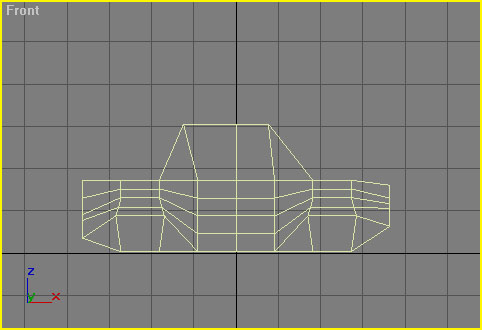
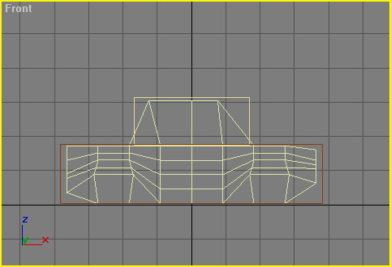
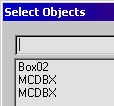
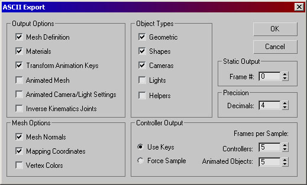
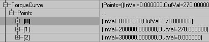
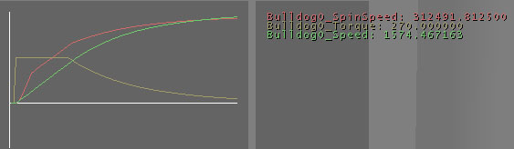
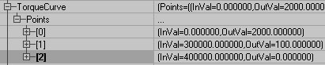
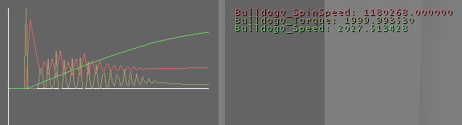

UDN
Search public documentation:
KarmaCarCreation
Interested in the Unreal Engine?
Visit the Unreal Technology site.
Looking for jobs and company info?
Check out the Epic games site.
Questions about support via UDN?
Contact the UDN Staff
Karma Car Content Creation
Document Summary: A quick tutorial on how to create and import a wheeled Karma vehicle, with extensive reference documentation. Requires a fair amount of Unreal knowledge. Also requires the help of a programmer. For intermediate to advanced users. Document Changelog: Last updated by Tom Lin (DemiurgeStudios?), for document summary. Original author was Chris Linder (chris@demiurgestudios.com) (DemiurgeStudios?).Introduction
This document provides instructions about how to easily create and drop Karma Cars (any 4 wheeled vehicle with any sort of drive train) into your game. This starts at the 3D Studio Max level and goes to the point at which you are driving the car in your game. This document also goes over how to customize the cars using parameters in Unrealed. To follow the instructions in this document, you MUST have the code from KarmaCars set up on your machine! Please set this up first.Building a Car in 3DS MAX
Step 1: Model a Car
Just model the car. Do not model any tires on the car. Do not put any bones in the car because you will importing it into Unrealed as a static mesh. Try to use the same scale as everything else modeled for your game. Also align the car so that forward is along the X axis as shown below.
You should apply at least two materials to your car. Material ID 2 is used for the brake lights and will be swapped to have lights, off, on and reverse. If you are doing headlights (like the Bulldog has) they should also be there own material, in the Bulldog's case, Material ID 3.Step 2: Model Tires
In a different MAX scene model a tire you want on your car. You can make different models for the front and rear tires (different MAX scene for each) or just make one tire and use it for all four wheels. The tire should have the pivot centered in the object and it should also be at the origin.Step 2: Add Karma Collision Volumes
For the Car
Add Karma collision volumes to your scene such that they surround most of your vehicle. The adding of collision volumes is described in the KarmaReference here. They should be as simple as possible while still surrounding the object. Also, avoid the use of cylinders, they don't seem to work. In the end your mesh and your volumes should look something like this:
and your total objects should look something like this:
In general the collision volumes should extend slightly beyond the static mesh. You can experiment with what works best for you.For the Tires
Use sphere collision for the tires. 8 segments work great, you don't need to go higher. The collision volume should extend slightly beyond the tire. Make sure the tire and the collision volume are both centered at the origin.Save and Export
Save your model (just for good measure) and then export it as an ASE with these settings:
Importing Your Car into Unrealed
Importing is pretty easy. Open up the Static Meshes browser and go to File->Import. Selected the ASE you want to import. Then type in or select the package you want and make sure the mesh is named as you would like. Then click OK. The importer will tell you that it has found Karma data and ask you if you want to add it to the static mesh. The answer is Yes. The import process is finished. Do this for the chassis and the wheels, save your package and then everything is ready to work.Putting Your Car in Your Level
At this point you can open Unrealed and drop a Pawn->KVehicle->KCar->GenericCar in your level. You can also drop in a Pawn->KVehicle->KCar->GenericCar->Bulldog which has working headlights and a grenade launcher. You can customize the location of the headlights and the grenade launcher and it might be more fun to test with. The first thing you want to do is select you car static mesh in the static mesh browser. Next bring up the properties of the car and go to Display and then to StaticMesh and click Use. This will set chassis of the car to your car body. Next you need pick wheels for your car. Unfortunately, you can not make new tires in Unrealed. They are very easy to make in script though because all you need to do is subclass GenericTire and set two defaultproperties, StaticMesh and DrawScale. Once the tires are made in script (maybe with the help of a programmer) you can add them by setting the FrontTireClass and RearTireClass. At this point you could run the game and see how you car looks. The wheels will probably be in the wrong places and most likely will not drive how you want it to. Now it is time to customize your car.Customizing Your Car
There are 3 (4 if using the bulldog) categories in the car properties in Unrealed that you can use to change the attributes of your car. Once you have car the way you want it, it can be made into its own class so it can just be dropped in the level like CLMonsterTruck which is a modified Bulldog. Unfortunately there is no automated way to do this so the car in Unrealed must be copied (ctrl-c) and pasted into a script file and then the script files must be rebuilt. Find someone who knows how to do this already if you don't.Display
DrawScale - This will change the size of your car. It was also change the mass and inertial properties of the car so do not change this lightly. This is best if left at 1.0 but that is not always possible. DrawScale3D - NEVER CHANGE THIS! Use DrawScale only. StaticMesh - This is the mesh for the chassis of the car.KCar
ChassisMass - This is the mass of the body of the car SORT OF. This amount is affected by DrawScale and also (as far as I can tell) by the size of the Karma blocking volumes. Therefore I suggest comparing this number to itself, not to other masses. FlipTime - This is the amount of time the FlipTorque is applied to the car. It is also the amount of time before you can try flipping the car again. FlipTorque - This the amount of torque applied to the car to flip it back over. This is applied along the axis that has the shortest rotation to get the car back on its wheels. This means that it unfortunately sometimes picks the lengthwise direction which is much harder to rotate about even though the rotation is shorter. FrontTireClass - This is the class of the front tire. This does not affect the friction properties at all. RearTireClass - This is the class of the rear tire. This does not affect the friction properties at all. HandbrakeTresh - If the car is going faster than this speed, and the brake is applied and car's steering is not centered, the "Handbrake" will be applied. This will adjust the friction of the rear tires. The general idea is to reduce the friction so the car will spin more easily but TireHandbrakeFriction and TireHandbrakeSlip (which determine how friction is adjusted) can be set to whatever you want. TireHandbrakeFriction - This is added to the rear tire TireLateralFriction. To make the car spin more easily, this should be negative. The closer this number is to 0.0, the less pronounced the spin effect will be. TireHandbrakeSlip - This is added to the rear tire TireLateralSlip. To make the car spin more easily, this should be positive. The closer this number is to 0.0, the less pronounced the spin effect will be. MaxBrakeTorque - This is the maximum torque applied for braking. This torque is applied in the opposite direction of the tire rotation. The larger this number is, the faster the wheel will stop turning. How fast the car stops however is also based on the TireRollFriction because even if the wheel is not turning, it can still slide. MaxNetUpdateInterval - This is the most often the car physics will be updated on the network. If this is too small, KCar could easily flood network bandwidth. If this is too large, net-play for KCar will be jerky, choppy, and easily out of sync. MaxSteerAngle - This is the max angle the wheels can turn to based on a 65536 = 360 deg scale. The inside wheel will turn more sharply because it is taking a shorter path around the circle of the turn. This is closely tied to SteerSpeed and SteerTorque. SteerPropGap - I don't understand what this does. The tire's KProportionalGap is assigned this number. If it is 0, the car is destroyed. Other than that, it doesn't seem to matter. I would leave it at the default. SteerSpeed - This is the number of Unreal degrees (65536 = 360) per second that the front tires try to turn at. In almost all cases the tires turn at this rate but really it depends on SteerTorque. SteerTorque - This is how much torque will be applied to turn the wheel to its desired rotation based on MaxSteerAngle and SteerSpeed. If this number is low, the wheel will behave like a bad wheel on a shopping cart. It will wobble and spin around a lot (full 360). Generally it is best to set this number high. StopThreshold - This is the speed below which the car considers itself stopped. This mean that the car will apply the brakes below this speed because it thinks it is stopped. It also has an affect on switching from braking to reversing. SuspDamping - This is how much damping the suspension has. This basically mean how little bounce do you want the car to have. If this is 0 the suspension will be just like springs and the car will bounce A LOT. If this is too large the car might not be able to absorb bumps very well or the car will drive like it has marshmallows for tires or both. If you having problems will absorbing bumps try turning SuspStiffness down first. SuspHighLimit - This is how high the tires can go when the suspension compresses. The larger this number is, the more the suspension will have play up and down. This number should generally be symmetric with SuspLowLimit. SuspLowLimit - This is how low the tires can go when the suspension is uncompressed. The larger this number is, the more the suspension will have play up and down. This number should generally be symmetric with SuspHighLimit. SuspStiffness - This is how "stiff" the suspension is. Think of this number like a spring constant; the larger it is the more force the suspension will exert to return to it natural position. Small values will allow the suspension to absorb bumps easily but the car will also be more likely to roll in turns and bottom out on hills and dips. Small values of this setting can be countered with large values of SuspDamping. If bumps are not an issue, this should be set higher to make the car behave more solidly. TireAdhesion - This is the "'stickyness' in the normal dir". Large values of this make the car go crazy while a value of 0 seems to work OK. Negative numbers also seemed OK but I don't understand what that means. Maybe some small value could be used to improve driving but I would be inclined to leave it at 0. TireLateralFriction - This is the friction of the tire in the direction perpendicular to it's motion. This is used for going in a straight line and turning. Values that are too large will cause the car to flip easily in while turning, particularly at high speeds. Values that are too small with cause the car to be very difficult to control. For realistic simulations, this number should be the same or very close to TireRollFriction because that is how the friction really works. TireRollFriction - This is the friction of the tire in the direction it is rolling. This is used for starting and stopping. If this is too large the car will have a tendency to pop wheelies and flip over forwards while stopping (if the values set in TorqueCurve or MaxBrakeTorque are large enough). For realistic simulations, this number should be the same or very close to TireLateralFriction because that is how the friction really works. TireLateralSlip - This is the max "slip" of the tire in the direction that it is NOT moving in (perpendicular to the direction of motion). Slip is sort of like the opposite of the friction but it behaves differently than friction. Slip is how much the car is going to slide away from the direction it wants to go in. If the car is turning, it will still turn but it will slide out of its path. Friction on the other hand, if it is too low, will make it very difficult to start the turn. The other odd thing about slip is that it is set to increase the faster the wheels spin. The lowest it can be is TireMinSlip and it will grow to be as large as this setting, TireLateralSlip. The rate of growth is based on the spin rate of the tires and TireSlipRate. TireRollSlip - This is the "slip" of the tire in the direction the tire is rolling in (see TireLateralSlip for a more detailed description of slip). Like TireLateralSlip is set to increase the faster the wheels spin. The lowest it can be is TireMinSlip and it will grow to be as large as this setting, TireRollSlip. The rate of growth is based on the spin rate of the tires and TireSlipRate. TireMinSlip - This is the smallest the slip value can be. See TireLateralSlip. TireSlipRate - This how fast the slip increases from TireMinSlip to TireLateralSlip or TireRollSlip. This wheel spin rate in multiplied by this value and then added to TireMinSlip maxing out at TireLateralSlip or TireRollSlip. TireMass - This is the mass of the tire. Adjusting the ratio between this and ChassisMass will cause different driving styles. If the tires are very heavy relative to the chassis then applying torque to the wheels will counter torque the chassis more. Because of this, there will be more ability to change the rotation of the car in the air by spinning the tires or braking. Also, the suspension will be less effective because the weight of the car is in the tires. TireRestitution - This is the bounciness of the tires. This is a 0 to 1 scale. Values larger than 1 will cause the tires to bounce back with a greater velocity than they hit with. Most of the time this is set to 0 and all the bounciness is taken care of in the suspension. TireSoftness - This setting determines how likely the tire is to "sink" though the ground. A very large value for this setting is 0.1. This setting is useful for driving over rocky terrain because the tires with "squish" though the sharp bumps and drive more smoothly. If this setting is too high, the tires will just sink though the normal ground and will not come out. It is sort of like driving in deep sand. TorqueCurve - This is a curve that maps current wheel rotation speed (of only the rear wheels) to output torque. For example the TorqueCurve defined below yields the following acceleration graph. (You can show this graph in game by typing "Graph Show" at prompt.)

Be careful when adding many points with different output torques to this curve because oscillation is a problem. A point on the curve is picked and a certain torque is applied and the wheels then change spin speed. The next frame the wheels have a different enough spin speed that a very different torque value (much smaller) is picked and the wheels due to other factors like friction, can reduce their spin speed and go back to something close to the first frame. This cycle will repeat for a while until the torque and spin speed eventually converge. This oscillation is more likely to happen in situations where the drive wheels are slipping because they can change spin speed very quickly without changing the speed of the vehicle much. This situation looks like this.

TorqueSplit - This is the ratio between the front and rear wheels for drive torque. 1 is rear wheel drive, 0 is front wheel drive and 0.5 is 4WD. WheelFrontAcross - This is how far apart (width) the front wheels are. WheelFrontAlong - This is how far forward the front wheels are from the mesh pivot. Negative values are more forward. WheelFrontVert - This is how far the front wheels are below the mesh pivot. Negative values are lower. WheelRearAcross - This is how far apart (width) the rear wheels are. WheelRearAlong - This is how far backward the rear wheels are from the mesh pivot. Positive values are more backwards. WheelRearVert - This is how far the back wheels are below the mesh pivot. Negative values are lower.